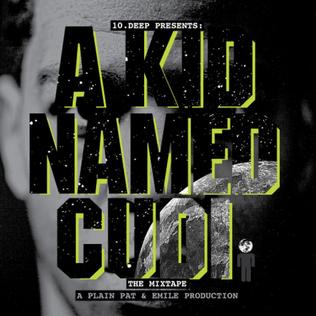

Kid Cudi
Scott Ramon Seguro Mescudi
Uppruni
Scott Ramon Seguro Mescudi betur þekktur sem Kid Cudi er hip hop tónlistamaður frá Cleveland, Ohio. Cudi flytur til New York eftir high school í þeim tilgangi að ná langt í tónlistarheiminum og býr þar með frænda sínum. Cudi fær vinnu í Bape verslun og hittir þar framtíðar leiðbeinanda sinn Kanye West. Frændi Kid Cudi hendir honum síðan út úr íbuðinni sem þeir bjuggu í og það fær hann til þess að skrifa lagið Day 'n' Night. Eftir að hann skrifað lagið veit hann það að hann verði að "meika" það. Plain Pat, sem var umboðsmaður og producer Kid Cudi kynnir Kanye West fyrir honum og Kanye lýst svo vel á hann að hann fær hann til þess að gera samning við útáfufyrirtækið GOOD MUSIC sem Kanye átti á þeim tíma. Eftir það gefur Kid Cudi út fyrsta mixtape-ið sitt "A Kid Named Cudi" 
Man On The Moon Trilogy
15. september 2009 kemur út fyrsta stúdíó plata Kid Cudi sem ber nafnið Man On The Moon: The End of Day. Platan seldi yfir 100.000
eintök í fyrstu vikunni eftir útgáfu og naut platan mikilla vinsælda. Platan var nokkurn vegin hans leið til
þess að segja frá lífi sínu og er platan á léttari nótunum. Aðeins meira en ári síðar, 9. nóvember 2010 gaf hann út Man on The Moon II: The Legend of Mister Rager.
Sú plata varð enn vinsælli en sú fyrri og seldi 169.000 eintök í fyrstu vikunni. Á plötunni heldur hann áfram að syngja um líf sitt
en þessa plata var mun þyngri en sú fyrri, enda var Kid Cudi að glíma við mikið þunglyndi á þessum tíma, sem heyrist vel þegar hlustað er á plötuna.
Þessar tvær plötur hafa haft mjög mikil áhrif á hip-hop senuna í heild sinni. Mörg stór nöfn í tónlistarheiminum kalla Kid Cudi eitthvern áhrifamesta
tónlistamann áratugsins. En það eru tónlistarmenn á borð við Kanye West, Travis Scott og fleiri. Margir yngri tónlistarmenn dreyma einnig um
að gera tónlist með Cudi. Juice Wrld er einn af þeim, en þeir áttu samskipti á Twitter um að gera lag saman áður en Juice Wrld lést.
Síðan 10 árum seinna, þann 26. október hleður Kid Cudi myndbandi upp á Youtube síðuna sína sem kynnir næstu plötu í þessum þríleik
sem aðdáendur eru búnir að bíða spenntir eftir.

Endurhæfing, PP&DS og Kids See Ghosts
Árið 2016 kdlsæfaæslkdjf